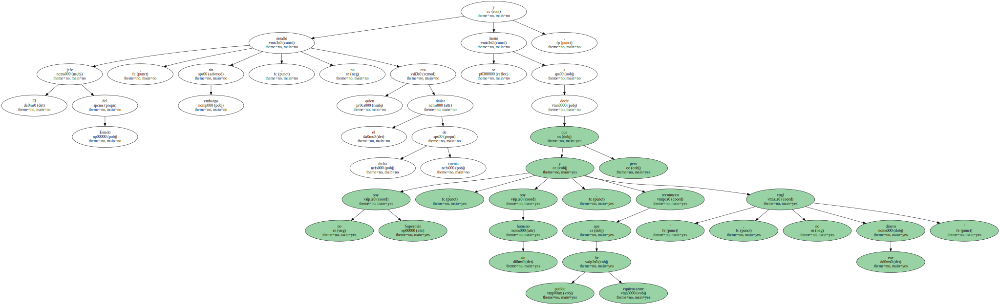
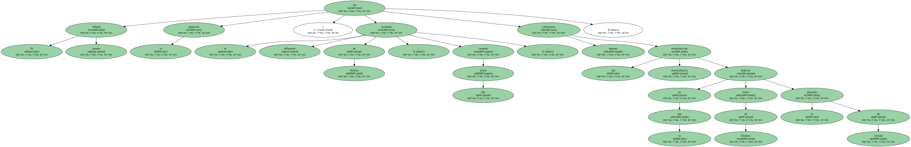
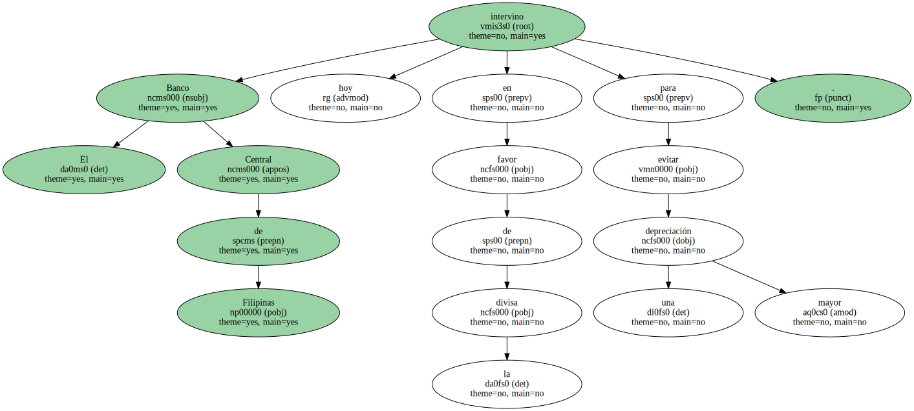

El presidente de Filipinas , Joseph Estrada , inmerso en un escándalo de corrupción , dijo hoy que el gobernador que le acusó de haberse embolsado millones de dólares procedentes del juego ilegal había intentado sobornarle , pero - aseguró - " nunca utilicé ese dinero ".
Estrada es blanco de una campaña de desprestigio liderada por la vicepresidenta del país , Gloria Macapagal-Arroyo , desde que el gobernador de la provincia de Ilocos del Sur y antiguo amigo del presidente , Luis Singson , le acusó de haberse embolsado más de ocho millones de dólares procedentes del juego ilegal y de comisiones de una empresa tabacalera.
En una entrevista con una emisora local , el presidente filipino insistió hoy en que no dimitirá y que si es necesario se enfrentará a un juicio en el Senado , donde prometió que " habrá sorpresas ".
Según Estrada , Singson le ofreció 200 millones de pesos ( más de cuatro millones de dólares ) como sobornos para que permitiera un juego ilegal en su provincia , pero el presidente dijo que ese dinero fue ingresado en una cuenta bancaria de Ilocos del Sur y él nunca lo tocó.
El jefe del Estado , sin embargo , no detalló quien era el titular de dicha cuenta y se limitó a decir que " no soy Supermán , soy un humano , y reconozco que he podido equivocarme , pero no cogí ese dinero ".
Las declaraciones de Estrada se producen en un momento de máxima tensión política en Filipinas , donde la oposición , encabezada por Macapagal-Arroyo , que tiene el apoyo de la Iglesia Católica y los ex presidentes Corazón Aquino y Fidel Ramos , pide de forma insistente su dimisión.
Macapagal-Arroyo sustituiría a Estrada en la Presidencia del país si el mandatario dimite , tal y como contempla la Constitución filipina , lo que ha levantado las sospechas de que en las altas esferas del poder se mueven otros intereses.
Para contrarrestar esta campaña , Estrada ha convocado para el próximo Sábado al pueblo filipino en el parque de Rizal , el mayor de Manila , en un intento de hacer frente a las críticas.
Ante la falta de apoyo de la Iglesia Católica , muy influyente en las decisiones del pueblo filipino , el único que profesa esta religión en toda Asia , el presidente contará con el respaldo de sectas cristianas y movimientos protestantes , lo que ha levantado aun más las iras de la oposición.
El Sábado pasado fue la oposición y el influyente arzobispo de Manila , cardenal Jaime Sin , quienes convocaron una manifestación multitudinaria en la que miles de filipinos pidieron la dimisión de Estrada.
Durante la semana , el presidente ha ido perdiendo el apoyo del sector económico al pedir públicamente su dimisión tanto la Cámara de Comercio e Industria de Filipinas , con más de 20.000 miembros , como la Asociación de Analistas Financieros , por considerar que sólo su renuncia sacará al país de la crisis.

La Bolsa de Manila y la divisa filipina , el peso , registraron un alto índice de volatilidad durante la semana debido a la crisis política y social que azota a esta nación del Sudeste Asiático.

El Banco Central de Filipinas intervino hoy en favor de la divisa para evitar una mayor depreciación.
